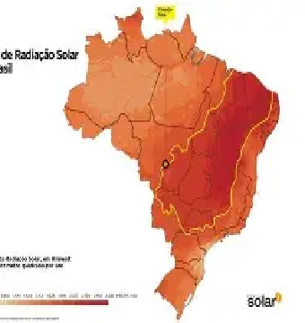

Tijucas x Melhores Regiões do Brasil
No Brasil, as maiores taxas de radiação solar são encontradas no sertão nordestino e norte de Minas Gerais, onde a média ultrapassa 6,0 kWh/m²/dia. Em comparação, Tijucas apresenta cerca de 20 a 25% menos radiação solar, mas ainda se encontra em um patamar vantajoso, sobretudo pela estabilidade da rede elétrica local e incentivos à energia renovável.
